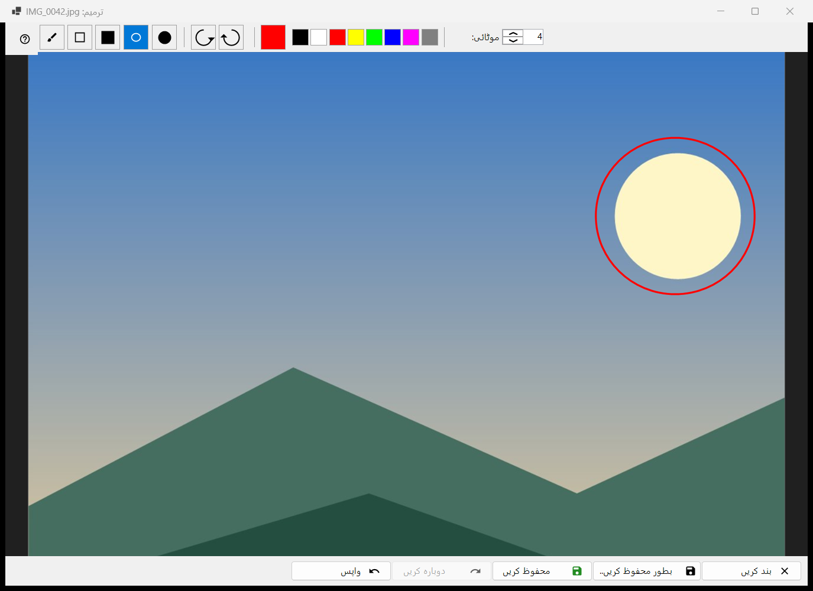
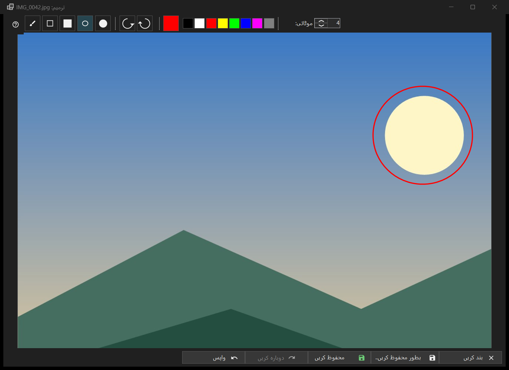

تصویر میں ترمیم
یہ کس مقصد کے لیے ہے
ایک ساکن تصویر کے لیے چھوٹا ایڈیٹر: شکلیں بنائیں، کاٹیں، گھمائیں اور پلٹیں، پھر اصل فائل کے اوپر یا نئی فائل کے طور پر محفوظ کریں۔ یہ ٹول بار کے ترمیم بٹن یا تصویر کے مینو کے پہلے آئٹم سے کھلتا ہے، عنوان میں تصویر کی فائل کے نام کے ساتھ، اور صرف ساکن تصویر کے لیے (اینیمیشن کے لیے نہیں)۔ ایڈیٹر فائل کو دوبارہ پڑھتا ہے اور اپنی ہی کاپی پر کام کرتا ہے۔


اس ترتیب میں
- ویور میں ترمیم دبائیں۔
- کوئی ٹول، رنگ اور موٹائی چنیں۔
- تصویر پر بنائیں، یا کاٹیں، گھمائیں یا پلٹیں؛ واپس ایک قدم پیچھے لے جاتا ہے۔
- اصل فائل پر لکھنے کے لیے محفوظ کریں دبائیں، یا نئی فائل کے لیے بطور محفوظ کریں.. دبائیں۔
- ونڈو بند کریں؛ اگر غیر محفوظ تبدیلیاں ہوں تو سوال کا جواب دیں۔
عناصر
ٹولز
پٹی میں: کٹائی، برش، مستطیل، بھرا مستطیل، بیضوی اور بھرا بیضوی۔ کلیدیں C، B، R اور O ہیں (بھرے ہوؤں کی کوئی نہیں)۔ مستطیل یا بیضوی بناتے وقت Shift دبائے رکھیں تو مربع یا دائرہ بنتا ہے۔ کسی ٹول پر ماؤس لے جانے سے اس کا نام اور کلید نظر آتی ہے۔
رنگ اور موٹائی
رنگ کا بٹن رنگ کا ڈائیلاگ کھولتا ہے، اور اس کے پاس آٹھ فوری نمونے ہیں (سیاہ، سفید، سرخ، زرد، لائم، نیلا، میجنٹا، سرمئی)۔ موٹائی تصویر کے 1 سے 64 پکسل تک چلتی ہے (طے شدہ 4)؛ کلیدیں [ اور ] اسے ایک ایک سے بدلتی ہیں۔ رنگ اور موٹائی تمام ٹولز میں مشترک ہیں۔
کٹائی
کٹائی ٹول سے تصویر پر ایک فریم کھینچیں۔ کٹائی لاگو کریں بٹن صرف تب نظر آتا ہے جب فریم موجود ہو۔ Enter وہی کام کرتا ہے؛ Esc فریم کو بغیر کاٹے ہٹا دیتا ہے۔ تصویر تبھی کٹتی ہے جب آپ اسے لاگو کریں۔
گھمانا اور پلٹنا
بائیں گھمائیں (Ctrl+[) اور دائیں گھمائیں (Ctrl+]) پکسل گھماتے ہیں۔ کلیدیں H اور V تصویر کو افقی اور عمودی پلٹتی ہیں۔ اس سے تصویر خود بدلتی ہے، ویور کے R کے برعکس، جو صرف ڈسپلے کو گھماتا ہے۔
واپس اور دوبارہ کریں
واپس (Ctrl+Z) اور دوبارہ کریں (Ctrl+Y یا Ctrl+Shift+Z) میموری کی حد کے اندر زیادہ سے زیادہ 20 مراحل کی تاریخ میں چلتے ہیں۔ اسٹیٹس بار سائز دکھاتا ہے اور تبدیلی کے بعد تبدیل شدہ کے ساتھ مرحلہ N از M؛ جب حد کی وجہ سے سب سے پرانے مراحل ہٹتے ہیں تو لکھتا ہے پرانے مراحل خارج کر دیے گئے: میموری کی حد۔
محفوظ کرنا
محفوظ کریں (Ctrl+S) اصل فائل پر لکھتا ہے اور صرف تبدیلی کے بعد فعال ہوتا ہے؛ اس سے پہلے اس کا ٹول ٹپ کہتا ہے محفوظ کرنے کو کچھ نہیں: تصویر تبدیل نہیں ہوئی۔ JPEG کے لیے ہر سیشن میں ایک بار پوچھا جاتا ہے: JPEG دوبارہ کمپریس ہو گا - یہ واپس نہیں کیا جا سکتا۔ تصویر کی تاریخ اور باقی EXIF ڈیٹا محفوظ رہتا ہے۔ فائل ایک عارضی نام سے لکھی جاتی ہے اور پھر بدل دی جاتی ہے؛ اگر محفوظ کرنا ناکام ہو تو ونڈو وجہ کے ساتھ کھلی رہتی ہے۔
بطور محفوظ کریں..
نام میں (ترمیم شدہ) جوڑ کر فائل ڈائیلاگ کھولتا ہے۔ فارمیٹ PNG، JPEG، BMP، TIFF اور WebP ہیں؛ کسی اور فارمیٹ کی تصویر PNG کے طور پر پیش کی جاتی ہے۔ آرکائیو کا عارضی فولڈر رد کر دیا جاتا ہے۔ اصل فائل پر محفوظ کرنے کے بعد ویور اسے دوبارہ لوڈ کرتا ہے؛ اسی فولڈر کی نئی فائل کھولی جاتی ہے؛ کہیں اور کی فائل کا نام اسٹیٹس بار میں بتایا جاتا ہے۔
جب محفوظ کریں بند ہو
اسٹیٹس بار وجہ کے ساتھ اصل فائل پر نہیں لکھا جا سکتا کہتا ہے: یہ فارمیٹ لکھا نہیں جاتا، فائل صرف پڑھنے کے لیے ہے، لکھنے کی اجازت نہیں، کوئی اور پروگرام فائل کو روکے ہوئے ہے، فائل میں کئی صفحات یا فریم ہیں (صرف پہلا ایڈٹ ہوتا ہے)، وہ آرکائیو کے اندر ہے، یا موجود نہیں۔ بطور محفوظ کریں.. پھر بھی دستیاب رہتا ہے۔
بند کرنا
بند کریں یا Esc ونڈو بند کرتا ہے؛ Esc پہلے جاری اسٹروک منسوخ کرتا ہے، پھر کٹائی کا فریم ہٹاتا ہے۔ غیر محفوظ ترمیمات ہوں تو سوال یہ ہوتا ہے: تبدیلیاں محفوظ نہیں ہوئیں - ایڈیٹر بند کریں اور غیر محفوظ تبدیلیاں کھو دیں؟ محفوظ کریں پہلے محفوظ کرتا ہے، محفوظ نہ کریں انہیں رد کر دیتا ہے، منسوخ کریں (طے شدہ، Esc بھی) ایڈیٹر میں ہی رکھتا ہے۔ یہ سوال تب بھی پوچھا جاتا ہے جب تصدیقات بند ہوں۔